実家の換装後の参号機(EVA-03)のベンチマークの結果(「の」ばっかり)。
★ ★ ★ HDBENCH Ver 3.30 (C)EP82改/かず ★ ★ ★
M/B Name ASUSTeK K8N
Processor No Data 2008.22MHz[AuthenticAMD family F model C step 2]
VideoCard RADEON 9550
Resolution 1280x1024 (32Bit color)
Memory 523,568 KByte
OS 5.1 (Build: 2600) Service Pack 2
Date 2006/05/14 15:00
NVIDIA nForce3 250 Serial ATA Controller (v2.6)
HDT722525DLAT80
PIONEER DVD-RW DVR-103
NVIDIA nForce3 250 Serial ATA Controller (v2.6)
ALL Integer Float MemoryR MemoryW MemoryRW DirectDraw
50677 93536 109727 104354 60544 115984 37
Rectangle Text Ellipse BitBlt Read Write Copy Drive
31527 20383 11900 203 68220 63601 6583 C:\100MB
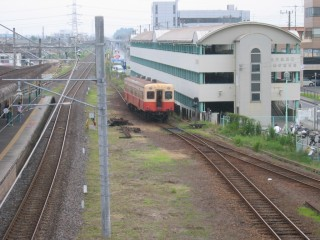 2006年5月の久留里線に味をしめて(?)、海の日の三連休にも出かけることにした。前回の当初の目的は小湊鉄道だったので、いよいよ本丸攻略である(んざそら)。5月下旬からいそがしくなってしまったため、事前の情報収集が直前になってしまう。参考サイトは、「養老渓谷」と「小湊鉄道応援ページ」。
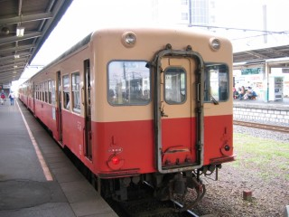 五井に着くと、ハイカーが沢山いる。何事かと思ったら、「駅からハイキング」とバッティングしてしまった模様。紅葉の季節は増結するらしいのだが、この日も三両編成のところに二両を急遽増結して五両編成で発車。写真は、五井駅で発車を待つキハ200系。
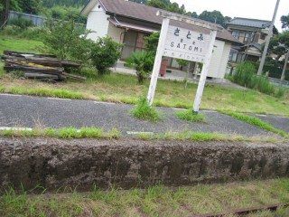 小湊鉄道には交換設備のある駅が多いが、現在は使われておらず線路にもホームにも草が生えてしまっている。上総牛久をすぎると、ローカル色がさらに濃くなっていく。写真が斜めなのは、背中から撮ったため。
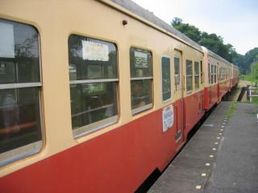 五井を発車して約一時間後に、養老渓谷に到着。ちなみに、五両編成だとホームにすべての車両が止まりきれない。下車する場合は、前部へ移動する必要がある。
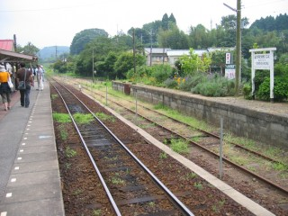 養老渓谷からひとつ先の終点上総中野までは、一日五往復しか運転がない。右側の線路とホームは現在使われていないが、軌道バイクとかゆー乗り物の体験乗車時に使われるらしい。
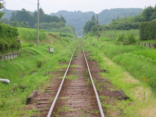 この先が、終点の上総中野。2006年4月中旬の集中豪雨で運転が中断されていたが、6月中旬に復旧したばかり。
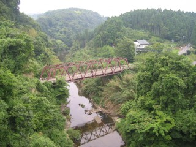 養老渓谷は、こんな感じ。「駅からハイキング」とほぼ同じ道を、同じようにてくてくと歩いていく。はたから見たら、「駅からハイキング」の参加者そのもの。
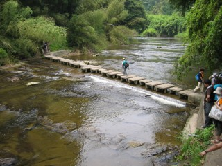 途中、沢に下りて歩ける場所もある。沢の中には、鮎が泳いでいたりする。
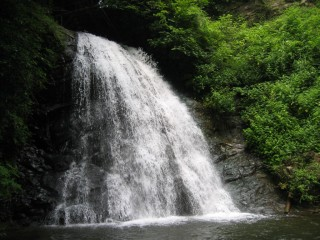 二時間ほど歩いて、水月寺に到着。暑いのと意外に距離と時間が{あった|かかった}ため、かなりくたばっていた。お寺から渓谷に降りていく途中にある、小沢又の滝で昼飯(蘇我で買っておいた駅弁)を食う。
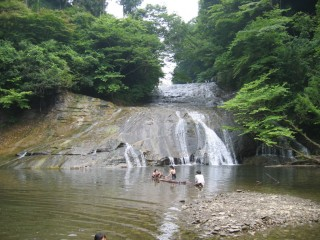 そこから一時間ほど歩くと、房総半島最大の滝「栗又の滝」に到着。ここは、人がいっぱい。人が写らないアングルを探すが、どうしても無理。スクール水着だか競泳水着だかよくわからん格好の女の子二人と、それを撮影しているナゾの男が見切れてしまう。
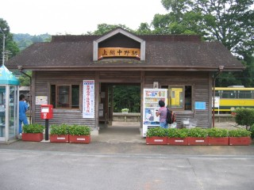 当初の予定では栗又の滝から上総中野駅まで歩くつもりだったが、予想以上に距離がありそうなことに加えて体力的にも無理。栗又の滝からバスに乗ることにした。幸いなことに、10分くらい待って14:41の便に乗れた。次が16:00すぎだったから、ご隠居ラッキーでしたね!
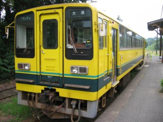 上総中野駅で発車を待つ、いすみ鉄道のレールバス。こちらは、なんと冷房付き!
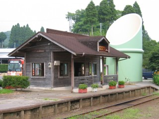 上総中野駅を、別のアングルから。手前の線路は小湊鉄道のものだが、右側ですぐに終わってしまっている。
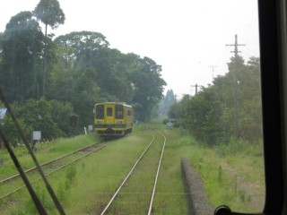 いすみ鉄道の沿線風景は、こんな感じ。
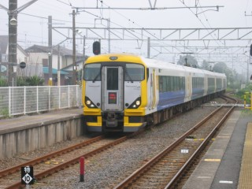 一時間もしないうち(45分くらい?)に、大原駅に到着。写真は、外房線の発車を待っている間にやってきた「わかしお」。
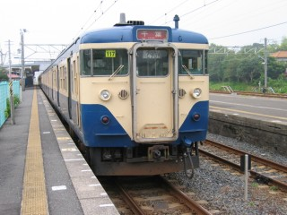 大原駅で発車を待つ、外房線113系。こいつに乗って、千葉まで戻った。ちなみに、五井－大原間は「房総横断記念乗車券」を購入。これが、安くてお得。
2006年5月にTDL(東京ディズニーランド)に行った際、次は順番的にTDS(東京ディズニーシー)だねぇ、なんて話したものだった(誰と?)。とゆーわけで、8ヶ月ぶりに東京ディズニーシーへ行く。東京ディズニーシーは、2006/09/04に5周年を迎える。つ～ことで5周年記念イベントが色々と行なわれているのだが、我々の目当ては「チップとデールのクールサービス」。このイベントは、2006/07/20から2006/08/31のいわゆる夏休みの間しか行なわれないのだ。夏休み期間中はパークが混雑するので、このスケジュールは大変ありがたくないのだが、ゲストに大量の水をかけまくるというイベントの性格上やむをえまい。
個人的なスケジュールの都合上、混雑度がさらに増す土曜日に行くことになってしまったが、そのかわり開園から閉園までは8:00から22:00のロングラン。ラッキーサマーチャンス(エントランスで渡されるスピードクジ)は早速外れるが、とりあへず腹が減ったので朝飯を食う。マンマ・ビスコッティーズ・ベーカリーで、パン類を購入。隣のテーブルでは、スズメがポップコーンを狙って非武装民間人を襲っていた。フロリダのディズニーワールドでもそうだったが、鳥類は何気に怖い。今回こそアトラクションはそれほどまわらずに、ショウ重視で……というはずだったのだが、いつのまにかファストパスをとっている自分達。
「センター・オブ・ジ・アース」でファストパスを取ると、「シンドバッド・セブン・ヴォヤッジ」のサプライズ・ファストパスなるものがついてきた。ラッキー! なんて思って向かいはじめた途端に、ふと気づく。「シンドバッド・セブン・ヴォヤッジ」は、ファストパス対象アトラクションぢゃねーよ。こりゃ、空いているアトラクションにゲストを誘導しているだけだよ! ……とはいえ、せっかく(?)なので「シンドバッド・セブン・ヴォヤッジ」へ行ってみる。まわりのゲストの手元を見ると、サプライズ・ファストパスががが。まあ、よい。ここは夢を見させてもらう場所なのだ。だまされた、なんて無粋な考えはよそう。
昼飯は、ノーチラス・ギャレーで餃子を食う。次回は、ギョウザ・ドッグが食べたい。レジェンド・オブ・ミシカは、ちと場所取りに失敗。メディテレーニアンハーバーの正面という悪くない位置だったのだが、うちはグーフィーよりもチップとデールが見たかったのだ。夕飯は、SSコロンビア・ダイニングにて5周年記念メニュー。ブラヴィッシーモ! も若干スタートが遅かったか、リドアイルの端っこで見る。上空の気流が不安定なため、ディズニーマジック・イン・ザ・スカイ(花火)は残念ながら中止。5周年記念のネクタイを購入して、撤収。ディズニーランドもいいけど、うちはディズニーシーの方がおもしろいかも。